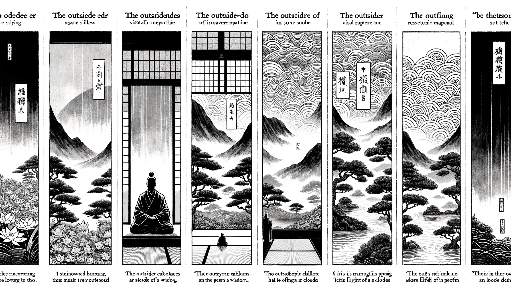

十二巻 巻一覧
正法眼藏第9 四馬
本ページは tools/gen_web_volumes.py が doc/正法眼蔵.txt から冒頭を抜粋して生成しています。図・詳細解説は今後の手編集で拡張できます。
出典（原文）: https://shomonji.or.jp/zazen/doc/genzou.html
（ローカル生成の全文: 全文ページ）
この巻の位置づけ（学習メモ）
道元『正法眼蔵』十二巻の第9篇「四馬」です。禅籍・経典への引用や語の行間が重なりやすいので、一度ですべてを要約に還元しない読み方を推奨します。問答 Bot では巻スコープにこの題名を含めると応答が安定しやすいことがあります。
語彙の足場
- 題名語：巻題「四馬」は、道元が本章で特に扱う論点の看板です。辞書義だけに固定せず、本文中の用例で意味を確かめます。
- 引用と典故：公案・経文の引用は、一字一句の照応（何に答えているか）を押さえると全体が見えやすくなります。
- 学び方：冒頭だけでも音読し、分からない箇所は印を付けて後から問うとよいです。
本文（冒頭・自動抜粋）
出典はリポジトリ内 doc/正法眼蔵.txt です。原文の参照元: https://shomonji.or.jp/zazen/doc/genzou.html
世尊一日、外道來詣佛所問佛、不問有言、不問無言（世尊一日、外道、佛の所に來詣りて佛に問ひたてまつらく、有言を問はず、無言を問はず）。
世尊據坐良久（世尊、據坐良久したまふ）。
外道禮拜讃歎云、善哉世尊、大慈大悲、開我迷雲、令我得入（外道、禮拜し讃歎して云く、善哉世尊、大慈大悲、我が迷雲を開き、我れをして得入せしめたまへり）。
乃作禮而去（乃ち作禮して去りぬ）。
外道去了、阿難尋白佛言、外道以何所得、而言得入、稱讃而去（外道去り了りて、阿難、尋いで佛に白して言さく、外道何の所得を以てか、而も得入すと言ひ、稱讃して去るや）。
世尊云、如世間良馬、見鞭影而行（世間の良馬の、鞭影を見て行くが如し）。
祖師西來よりのち、いまにいたるまで、諸善知識おほくこの因緣を擧して參學のともがらにしめすに、あるいは年載をかさね、あるいは日月をかさねて、ままに開明し、佛法に信入するものあり。これを外道問佛話と稱ず。しるべし、世尊に聖默聖説の二種の施設まします。これによりて得入するもの、みな如世間良馬見鞭影而行なり。聖默聖説にあらざる施設によりて得入するも、またかくのごとし。
龍樹祖師曰、爲人説句、如快馬見鞭影、卽入正路（人の爲に句を説くに、快馬の鞭影を見て、卽ち正路に入るが如し）。
あらゆる機緣、あるいは生不生の法をきき、三乘一乘の法をきく、しばしば邪路におもむかんとすれども、鞭影しきりにみゆるがごときは、すなはち正路にいるなり。もし師にしたがひ、人にあひぬるがごときは、ところとして説句にあらざることなし、ときとして鞭影をみずといふことなきなり。卽坐に鞭影をみるもの、三阿僧祇をへて鞭影をみるものあり、無量劫を經て鞭影をみ、正路にいることをうるなり。
雜阿含經曰、佛告比丘、有四種馬、一者見鞭影、卽便驚悚隨御者意。二者觸毛、便驚悚隨御者意。三者觸肉、然後乃驚。四者徹骨、然後方覺。初馬如聞他聚落無常、卽能生厭。次馬如聞己聚落無常、卽能生厭。三馬如聞己親無常、卽能生厭。四馬猶如己身病苦、方能生厭（雜阿含經に曰く、佛、比丘に告げたまはく、四種の馬有り、一つには鞭影を見るに、卽便ち驚悚して御者の意に隨ふ。二つには毛に觸るれば、便ち驚悚して御者の意に隨ふ。三つには肉に觸れて、然して後乃ち驚く。四つには骨に徹つて、然して後方に覺す。初めの馬は、他の聚落の無常を聞きて、卽ち能く厭を生ずるが如し。次の馬は、己が聚落の無常を聞きて、卽ち能く厭を生ずるが如し。三の馬は、己が親の無常を聞きて、卽ち能く厭を生ずるが如し。四の馬は、猶ほ己が身の病苦によりて、方に能く厭を生ずるが如し）。
これ阿含の四馬なり。佛法を參學するとき、かならず學するところなり。眞善知識として人中天上に出現し、ほとけのつかひとして祖師なるは、かならずこれを參學しきたりて、學者のために傳授するなり。しらざるは人天の善知識にあらず。學者もし厚殖善根の衆生にして、佛道ちかきものは、かならずこれをきくことをうるなり。佛道とほきものは、きかず、しらず。
しかあればすなはち、師匠いそぎとかんことをおもふべし、弟子いそぎきかんとこひねがふべし。いま生厭といふは、
佛以一音演説法（佛、一音を以て法を演説したまふに）、
衆生隨類各得解（衆生、類に隨つて各解を得）。
或有恐怖或歡喜（或いは恐怖する有り、或いは歡喜し）、
或生厭離或斷疑（或いは厭離を生じ、或いは疑ひを斷ず）。
なり。
大經曰、佛言、復次善男子、如調馬者、凡有四種。一者觸毛、二者觸皮、三者觸肉、四者觸骨。隨其所觸、稱御者意。如來亦爾、以四種法、調伏衆生。一爲説生、便受佛語。如觸其毛隨御者意。二説生老、便受佛語。如觸毛皮、隨御者意。三者説生及以老病、便受佛語。如觸毛皮肉隨御者意。四者説生及老病死、便受佛語。如觸毛皮肉骨、隨御者意（大經に曰く、佛言はく、復た次に善男子、調馬者の如き、凡さ四種有り。一つには觸毛、二つには觸皮、三つには觸肉、四つには觸骨なり。其の觸るる所に隨つて、御者の意に稱ふ。如來も亦た爾なり、四種の法を以て、衆生を調伏したまふ。一つには爲に生を説きたまふに、便ち佛語を受く。其の毛に觸るれば御者の意に隨ふが如し。二つには生、老を説きたまふに、便ち佛語を受く。毛、皮に觸るれば御者の意に隨ふが如し。三つには生及以び老、病を説きたまふに便ち佛語を受く。毛、皮、肉に觸るれば御者の意に隨ふが如し。四つには生及び老、病、死を説きたまふに、便ち佛語を受く。毛、皮、肉、骨に觸るれば御者の意に隨ふが如し）。
善男子、御者調馬、無有決定。如來世尊、調伏衆生、必定不虛。是故號佛調御丈夫（善男子、御者の馬を調ふること、決定有ること無し。如來世尊、衆生を調伏したまふこと、必定して虛しからず。是の故に佛を調御丈夫と號く）。
これを涅槃經の四馬となづく。學者ならはざるなし、諸佛ときたまはざるおはしまさず。ほとけにしたがひたてまつりてこれをきく、ほとけをみたてまつり、供養したてまつるごとには、かならず聽聞し、佛法を傳授するごとには、衆生のためにこれをとくこと、歴劫におこたらず。つひに佛果にいたりて、はじめ初發心のときのごとく、菩薩聲聞、人天大會のためにこれをとく。このゆゑに、佛法僧寶種不斷なり。
かくのごとくなるがゆゑに、諸佛の所説と菩薩の所説と、はるかにことなり。しるべし、調馬師の法におほよそ四種あり。いはゆる觸毛、觸皮、觸肉、觸骨なり。これなにものを觸毛せしむるとみえざれども、傳法の大士おもはくは、鞭なるべしと解す。しかあれども、かならずしも調馬の法に鞭をもちゐるもあり、鞭をもちゐざるもあり。調馬かならず鞭のみにはかぎるべからず。たてるたけ八尺なる、これを龍馬とす。このむまととのふること、人間にすくなし。また千里馬といふむまあり、一日のうちに千里をゆく。このむま五百里をゆくあひだ、血汗をながす、五百里すぎぬれば、淸涼にしてはやし、このむまにのる人すくなし。ととのふる法、しれるものすくなし。このむま、神丹國にはなし、外國にあり。このむま、おのおのしきりに鞭を加すとみえず。
しかあれども、古徳いはく、調馬かならず鞭を加す。鞭にあらざればむまととのほらず。これ調馬の法なり。いま觸毛皮肉骨の四法あり、毛をのぞきて皮に觸することあるべからず。毛、皮をのぞきて肉、骨に觸すべからず。かるがゆゑにしりぬ、これ鞭を加すべきなり。いまここにとかざるは文の不足なり。
諸經かくのごときのところおほし、如來世尊調御丈夫またしかあり。四種の法をもて、一切衆生を調伏して、必定不虛なり。いはゆる生を爲説するにすなはち佛語をうくるあり、生、老を爲説するに佛語をうくるあり、生、老、病を爲説するに佛語をうくるあり、生、老、病、死を爲説するに佛語をうくるあり。のちの三をきくもの、いまだはじめの一をはなれず。世間の調馬の、觸毛をはなれて觸皮肉骨あらざるがごとし。生老病死を爲説すといふは、如來世尊の生老病死を爲説しまします、衆生をして生老病死をはなれしめんがためにあらず。生老病死すなはち道ととかず、生老病死すなはち道なりと解せしめんがためにとくにあらず。この生老病死を爲説するによりて、一切衆生をして阿耨多羅三藐三菩提の法をえしめんがためなり。これ如來世尊、調伏衆生、必定不虛、是故號佛調御丈夫なり。
正法眼藏四馬第九
建長七年乙卯夏安居日以御草案書寫之畢
図解（4コマ・AI生成）
教義の根拠は本文・出典に従い、漫画は比喩の補助に留めてください。

深掘り（読解のコツ）
- 道元文は定義の羅列に見えても、多くの場合誤解への遮断と正伝の姿勢が背骨になっています。
- 「当体」「現成」「即」などの語が出たら、その巻独自の差別相にどう接続しているかをメモしておくとよいです。